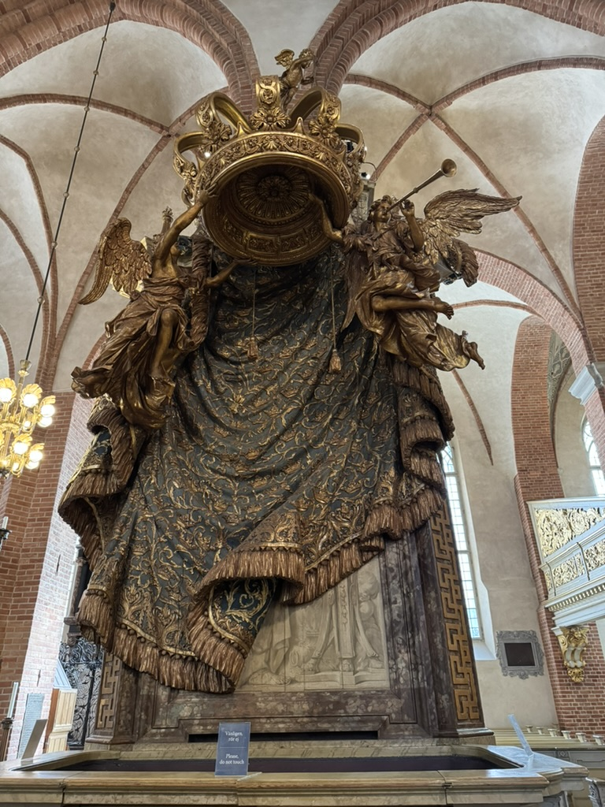

Tag 2
Nach dem Frühstück hatte ich ein wenig Zeit zu übrbrücken, da die meisten Museen erst um 11 Uhr öffnen und das Frühstück im Hotel nur 7 bis 10 verfügbar ist.
Um ca. 10:40 Uhr verlisst ich dann das Hotel und spazierste in Richtung Altstadt(Gaml Stan). Mein urpsünglicher Plan war es, ins Historische Museum auf der anderen Seite der Altstadt zu gehen, jedoch kam ich nie so weit. Was auf der Karte nah ausseht, wird durch einige Höhenmeter doch noch zu einer ordentlichen Distanz. Stockholms Inseln sind nämlich alles andere als flach.
Gamla Stan
Die Altstadt befindet sich auf einer eigenen Insel wo der verkehr nur aus äusseren Rand entlang fährt. Weg vom Wasser ist der Boden durchgehend mit Kopfsteinpflastern bedeckt und es geht auch viel bergauf.
{kind=link}
Tyska Kyrkan
{kind=link}
Das erste was ich angetroffen habe ist die Tyska Kyrkan (Deutsche Kirche). Die Fassade besteht zum grössten Teil aus Ziegelsteinen. Leider kann ich zu diesen Zeitpunkt nichts zum Innenausbau sagen, da die Kirche zwischen September und Mai nur am Wochende für Besucher geöffnet ist. Im Sommer jeden tag. Sämtliche Schriften die aussen angebracht sind sind auf Deutsch verfasst.
Nobelpreismuseum
Relativ zentral gelegen befindet sich der Stortorget (Grossmarkt - heisst zwar so, auch wenn hier die meiste Zeit kein Markt statt findet). Am Stortorget angrenzend befindet sich das Nobelpreismuseum, welches ich spontan besucht habe. Die Ausstellung umfasst viele Objekte die im Besitz verschiedener Nobelpreisträger waren und erzählt jeweils eine Geschichte dazu. Auch wird erklärt, wie es zur Grüdung des Nobelpreises kam und wie der Ablauf ist, der am Ende zu neuen Preisträgern führt.
Dafür dass die Ausstellung nur eine Etage umfasst, sind 120 SEK (~10 CHF/EUR) relativ teuer für den Eintritt.
Mehr Altstadt und Mittagesssen
{kind=link}
Aufgrund der unregelmässigen strassenverläufe verirrt man sich schnell im Gamla Stan. Aber dies hat auch seine gute Seite: Man sieht mehr vom Stadtteil. Es gibt unzählige kleine Läden die oft auf etwas sehr spezifisches spezialisiert sind. Auch viele kleine Cafés und Bars tritt man an.
Was ich interessant fand, waren die engen Gassen die die bereits engen Strassen miteinander verbinden. Eine ganz besondere ist die Mårten Trotzigs Gränd (mårten Trotzigs Gasse - s. Bild), welche an der entgsten Stelle auf 90 cm Breite schrumpft.
Nun war es langsam Zeit etwas zu Essen. Nachdem ich am Vorabend bereits nicht-schwedisch gegessen hatte, mied ich diesmal sämtliche italienische und andersweitig unlokale Restaurants, welche deutlich in der überzahl sind. Ich fand schliesslich ein Restaurant, welches mit echt schwedischen Gerichten warb. Auch für Whyskey-Enthusiasten gibt es hier etwas, denn die Bar hatte einge Menge verschiedener Flaschen. Laut Schriftzug am Eingang über fünfzig.
Ich bestellte Skagen als Vorspeise und den schwedischen Klassiger Kötbollar als Hauptgang. Die Fleischbällchen waren jedoch etwas spezieller. Sie waren nämlich aus Hirschfleisch. Dazu fragte ich nach einem schwedischen Bier. Mir wurde St. Eriks Lager empfohlen.
{kind=link}
Riksdag & Kunigliga Slottet
Gestärkt vom Essen habe ich mich dann auf einen Spaziergang begeben. Zuerst bin ich durch die Gassen geschlendert und habe weitere kuriose Läden gesehen, bis ich dann schlisslich am nördlichen Ende der Insel angekommen war, wo sich der Reichtag befindet. Dieser wir zwar vor vielen Polizisten patroulliert, ist jedoch nicht von der öffentlichkeit abgesperrt. Es gibt sogar Führungen wo man die Innenräume betrachten kann.
{kind=link}
Weiter brachte mich mein Spaziergang dann zu einem seiteneingang des königlichen Schlosses. Auch hier wurde bewacht – und zwar richtig. Die Königsgarde ist ausgerüstet mit Maschinengewehren und behält alles im Auge, was sie auch regelmässig untereinander vie Fungeräten kommunizieren.
{kind=link}
Storkyrkan
{kind=link}
Nachdem ich ein wenig verdaut hatte war es dann an der Zeit, das nächste zu Besuchen, was auf meiner Liste stand: Storkyran (dt. "Grosse Kirche"). Hier gibt es einiges zu betrachten und an Prunk und Handwerkskunst mangelt es nicht. Was auch auffällt, ist dass viele Teile aus Ziegelsteinen gebaut sind (z.B. Das Deckengewölbe). Dies sieht man von aussen nicht.

{kind=link}
Zurück ins Hotel und der Abend
Gegen 16 Uhr taten mir langsam die Füsse weh und durch das dauernde Trsagen des Rucksacks auch das Genick, was sich dann auf dem Weg als Kopfschmerzen zeigte. Im Hotel habe ich mich daher ein wenig hingelegt, was leider nichts half. Trotzdem musste ich was essen, also habe ich mich noch einmal nach draussen begeben. Ich habe dann einen Spaziergang durch den Park neben dem Hotel gemacht und mir dann ein Restaurant in der Nähe gesucht. Da das Mittagessen einigermassen teuer war, wollte ich eher auf der günstigen Seite sein. Ich entschloss mich dann für einen Inder (Masala Masala). Der Mann an der Bar, vermutlich der Inhaber, konnte nur sehr akzentbehangen Englisch sprechen. Vermutlich ist das ein Zeichen der authenzität des Restaurants. Ich habe Garlic Balti Chicken bestellt. Das Curry war sehr gut, das Hühnchen hat ein wenig ungewohnt geschmeckt, aber bis jetzt (ca. 22 Stunden später) geht es mir gut, daher gehe ich davon aus, dass mit dem Fleisch alles in Ordnung war.
Das Essen, inklusive einer Portion Naan und Getränk, war 253 SEK (ca. 21 CHF/EUR), also absolut preiswert.